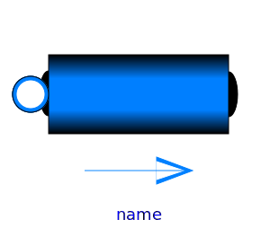
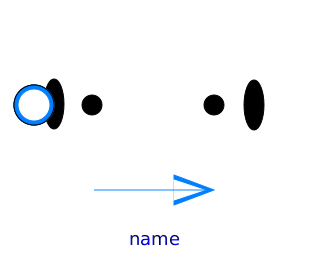

Base classes used in the Pipes package (only of interest to build new component models)
| Name | Description |
|---|---|
|  PartialStraightPipe | Base class for straight pipe models |
|  PartialTwoPortFlow | Base class for distributed flow models |
| Flow models for pipes, including wall friction, static head and momentum flow | |
| Heat transfer for flow models | |
| Functions to compute characteristic numbers | |
| Different variants for pressure drops due to pipe wall friction |